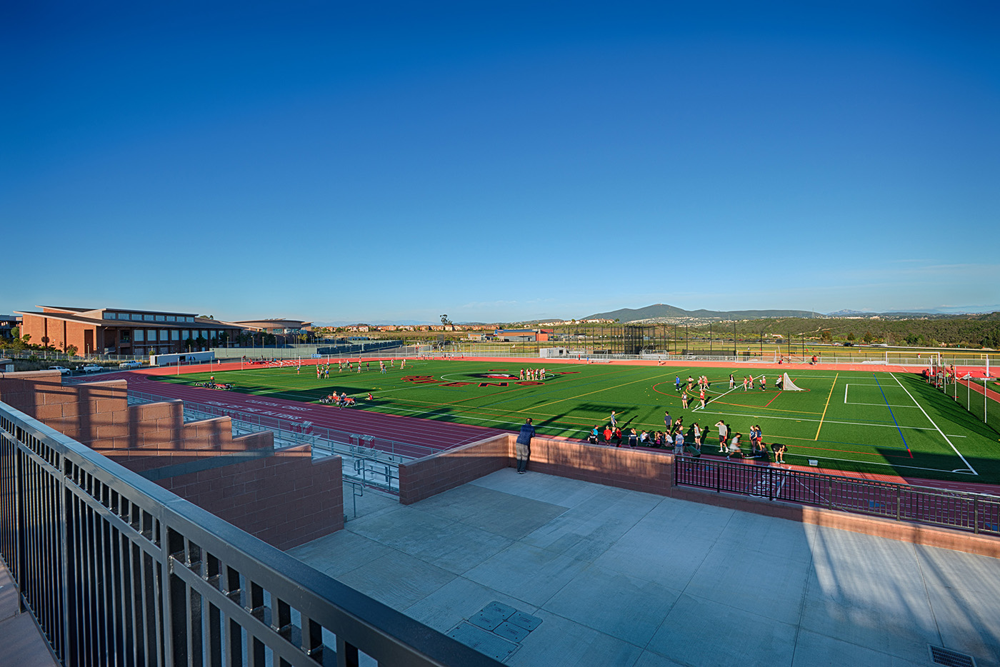

Keshu Yang
Year of 2027
About myself
I am Keshu Yang, a junior at Canyon Crest Academy. I am taking three classes this semester and serving as a TA for one period. The classes I am taking are Calc III, AP Physics 1, and AP CSP. I am getting straight As in the first quarter, and I hope I will get As in the next quarter as well. I like the classes I am taking, especially CSP, which is very fun, and I enjoy learning things about us that are based on computers. And I look forward to learning more about things around me in the future.
My hobbies
 I like to play badminton, play video games, and swim in my free time. I usually play badminton with my friends on weekends and enjoy the fun this sport brings me. I am also on the school badminton varsity team, which makes me very proud of myself. Playing video games is another way I spend time with my friends when we want to take a break from schoolwork. Swimming is a way for me to relax and take a break from the trivial things. Sometimes I also play chess to enjoy this fun competition in “brainpower”.
I like to play badminton, play video games, and swim in my free time. I usually play badminton with my friends on weekends and enjoy the fun this sport brings me. I am also on the school badminton varsity team, which makes me very proud of myself. Playing video games is another way I spend time with my friends when we want to take a break from schoolwork. Swimming is a way for me to relax and take a break from the trivial things. Sometimes I also play chess to enjoy this fun competition in “brainpower”.
My family
 There are four people in my family: my father, my mother, my sister, and me. My sister, who is 12 years old and a 7th grader, is 4 years younger than me. On weekends, we like to watch movies and enjoy our family time together. On holidays, we would dress up and invite other friends to our home to have dinner with us. We would have fun activities such as playing card games that liven up the atmosphere, making everyone smile on their faces.
There are four people in my family: my father, my mother, my sister, and me. My sister, who is 12 years old and a 7th grader, is 4 years younger than me. On weekends, we like to watch movies and enjoy our family time together. On holidays, we would dress up and invite other friends to our home to have dinner with us. We would have fun activities such as playing card games that liven up the atmosphere, making everyone smile on their faces.